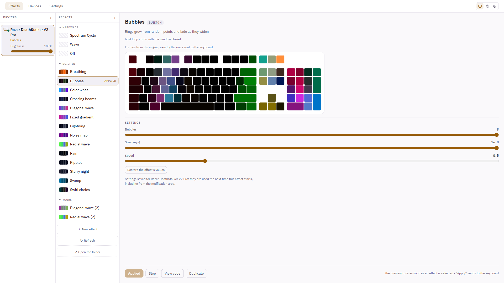
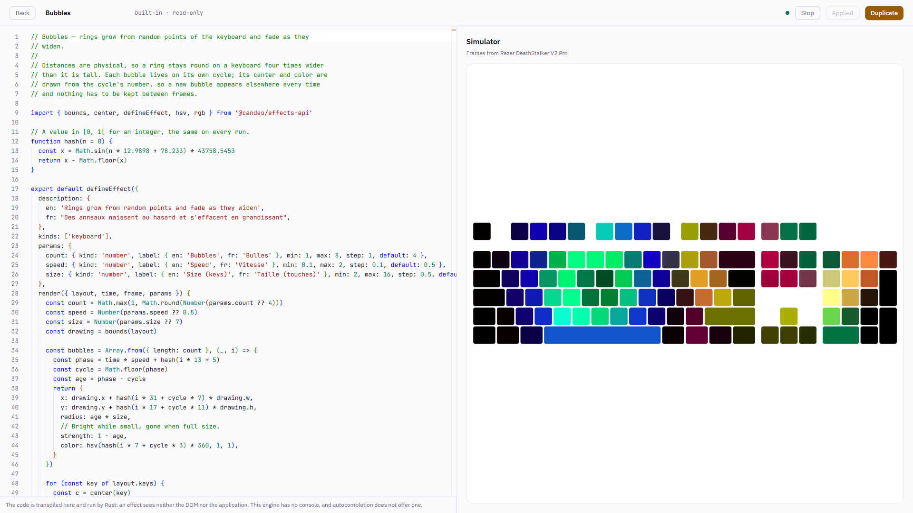

No vendor runtime, no background service, no account. Candeo writes to the keyboard over the HID interface Windows already exposes, and the effects you write run inside the application — so they keep running with the window closed.

Supported hardware
The Razer DeathStalker V2 Pro (wired), and that is the whole list. Its protocol was established by watching the hardware, and every fact is written down with the firmware version it was checked against. Without one of these keyboards, Candeo starts, lists no device and lights nothing.
Install
Windows
Installs for your account, no administrator rights.
Download {{version}}Not signed yet: SmartScreen warns about an unknown publisher. More info, then Run anyway.
winget
Once the manifest is accepted.
Linux
.deb and .rpm, each carrying the udev rule that gives you
access to the keyboard.
Every release carries a SHA256SUMS file:
sha256sum -c SHA256SUMS --ignore-missing, or Get-FileHash on
Windows.
An effect is a file you can read
Effects are TypeScript, compiled and run by the application on the Rust side. They receive
the keyboard's geometry and the time, and return colours. Yours live in
Documents\candeo\effects: ordinary files, editable here or in the editor you
already use.
import { defineEffect, hsv } from '@candeo/effects-api'
export default defineEffect({
description: 'A hue that travels down the rows',
kinds: ['keyboard'],
render({ layout, time, frame }) {
for (const key of layout.keys) {
frame.set(key, hsv((key.row * 40 + time * 90) % 360, 1, 1))
}
},
})
How it is built
- The protocol is documented, with the capture method and the firmware version behind each fact — docs/protocol.
- Decisions are written before the code, and kept when they turn out wrong — docs/design.
- Report construction is tested without hardware: the crate that builds the bytes has no system dependency.
- One engine runs the effects, in a thread that outlives the window, so closing it changes nothing.
What it sends
Nothing. No account, no telemetry, no identifier. The one request it can make is asking GitHub whether a newer version exists — a setting, off in the Microsoft Store version, where the Store does the updating. The full text is in the privacy policy.